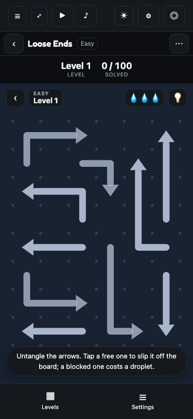

Mock G · Loose Ends — the knot has a key · v1.1 · baseline fun@5fcb81f
Mock F's proposal 9 shipped the curve (Q10, 2026-09-08 — level 1 is ten arrows on 6×8) and parked the second mechanic for a research pass: "colour bands that hide the flow, locked arrows that need a neighbour freed first, a par with three stars". The pass is done (the plan, plans/2026-09-08-plan-looseends-mechanic.md, carries the sources) and it sorts the three by what they add to reading the knot, which is the fun the genre's players name. One survives as a mechanic: a lock — an arrow that stays put, ray clear or not, until the arrow tied to it has slid off. This page draws it once and asks five decisions. Nothing is built.
Compare in one skin: the capture and the sketch are the default Worlds night skin. The capture is true size, 390×844, from tools/mock-snaps.mjs looseends --out g-looseends-mechanic --tag current, hermetic (level 1 is the same board for everyone).
v1.1 — 2026-09-08, owner: "go with the recommendations, build phase 1". Q1–Q5 decided at their recommendations; phase 1 (the rule in the core: Board::with_locks, Tap::Locked(key), a blocked ray reported before a lock) built on claude/looseends-locks with its mutation audit. Nothing on the board yet — the generator is phase 2, the drawing phase 3; a Shipped capture beside the sketch comes with phase 4.
v1 — 2026-09-08: the research pass and one sketch; five decisions asked; nothing built.
| Parked idea | Precedent in the genre | What it adds to the read | Verdict |
|---|---|---|---|
| Locked arrows — a neighbour must go first | Unpuzzle 2's hooked and connected squares; the stock "Count Down Blocks (Locked)" in Tap Away 3D templates; UnpuzzleX's countdown locks (unverified) | A second dependency graph on top of the ray graph: find the key before the path. New reasoning, not slower reasoning. Compatible with reverse-order construction if the key is placed after its lock (released before it). | build — this mock |
| Colour bands that hide the flow | None as camouflage. Colour in the genre means something (Arrow Unjam's match-3 tray, a snake's identity). The one datapoint on colour-as-obscurity is a 1★: "almost impossible to see the arrows". | The same reasoning made slower; a legibility and colour-vision regression on a 390px phone. | park |
| A par with three stars | Flow Free's fewest-moves star; arrowpuzzle.org's move-count board. No 2D arrow app surveyed uses a three-star par. | In a tap-away game the only wasted move is a blocked tap, so par collapses to the clean solve score.rs already grades 3★. A second axis would be a clock or a hint count; every 2D arrow game markets "no timer", and the one post-solve penalty found drew a 3★. | already the rule |
What players say they enjoy: "you can't just play it on autopilot, you need to consider the next step"; a board that makes them feel "like a genius and an idiot at the same time"; a solve that takes thirty minutes. What they hate: interruptions that break the read (ads, rank pop-ups, special blocks that must be tapped), boosters gating a level, and a lives system that punishes a fat finger as if it were a wrong read. So a tap on a lock here is information, not a trap — the key flashes, no droplet.
| Question | Recommendation | ||
|---|---|---|---|
| Q1 | Where do locks start, and how many? Easy is levels 1–15. | Level 8, one lock; then 1 + floor((n − 8) · 7 / 92) — eight at level 100 (of 68 arrows). Seven levels of the ray rule alone before the knot gets a key; levels 1–7 unchanged to the byte. | DECIDED 2026-09-08: level 8, one; the curve |
| Q2 | What does a tap on a locked arrow cost? | Nothing. The key flashes and the toast says "Tied — free the key first." A mistake stays a tap on an arrow whose ray is blocked; the star rule is untouched. | DECIDED 2026-09-08: a locked tap costs nothing |
| Q3 | Do daily boards get locks? | Not this pass. The daily's sizes are drawn from its seed before the generator runs, so a lock count is a fourth draw and re-records every daily's golden; and the campaign should teach the rule first. Revisit when Q1's band has shipped. | DECIDED 2026-09-08: no dailies this pass |
| Q4 | Colour bands — park or drop? | Park indefinitely, with the reason recorded (the table above). Colour would come back only if it meant something — a tray, a group — which is a different game. | DECIDED 2026-09-08: parked |
| Q5 | How is a lock drawn? | The locked arrow dim, a badge at its head, a dashed tie between the two touching cells (the sketch). A chain along the shared edge was the alternative; it reads as a border on a 44px cell. | DECIDED 2026-09-08: badge + tie |
Level 8 on the shipped curve is 14 arrows on 7×9, snakes of 3–5; the sketch draws thirteen. Three are free by their ray (gold). One more — the long one across the middle — has a clear ray to the right edge and is locked: the short arrow under it is its key, and that key's own ray is blocked by the arrow along the bottom. So the read is three deep: free the bottom, then the key, then the lock. Tapping the lock first flashes the key and costs nothing (Q2).
fun@5fcb81f, 390×844: level 1 on the shipped curve, ten arrows, one read
One predicate: Board::is_free is the only place the ray rule lives (release, free_arrows, greedy_solve and the hint all go through it), so a lock is a second clause there, not four. The generator places arrows in reverse solution order; the lock pairs are drawn after the retry wrapper picks its attempt, from the same RNG stream, with the key always an arrow placed later than its lock — released earlier — so releasing in reverse placement order still clears the board and the acceptance suite's greedy solver stays the proof. Every existing golden (level 1, level 50, the hundred counts) is unchanged to the byte; the new goldens are the pairs. The record needs no new bits: a lock count is a function of the level number the record already carries. The hash is over occupancy, and a lock's state is a function of its key's presence, so nothing there moves either. The phases, their RED tests and the mutation-audit gate are in the plan.